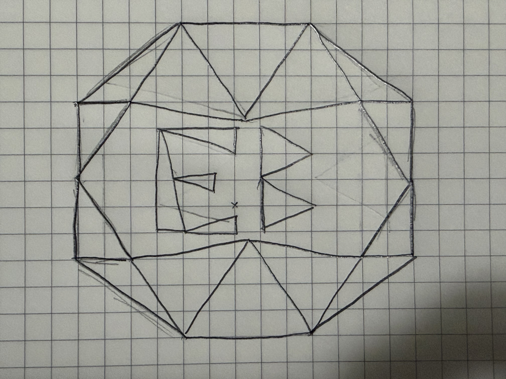

Name: Emiliano Bustos
Student Email: ebustos@ucsc.edu
Note:
Spray Paint Mode scatters your selected shape randomly around the cursor; use the Size slider to control the spray radius. Like in real life spray paint splashes some paint around the main focus point so that effect was added to the mode.
Soccer ball with initials EB, built with more than 20 triangles.
